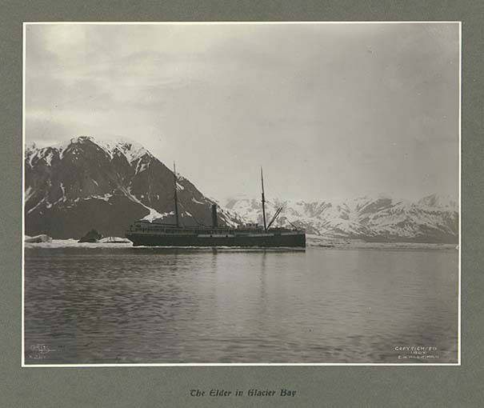
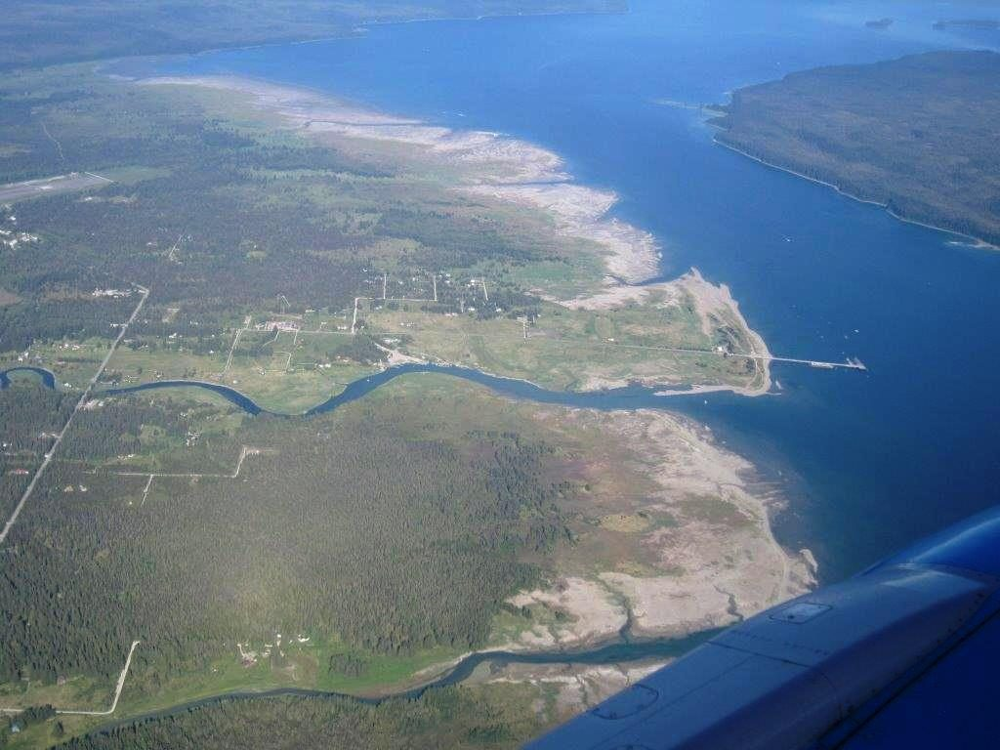

Directory / Southeast Alaska / Gustavus, AK
Gustavus tides — Icy Passage & Bartlett Cove, Glacier Bay
High and low tides for the coming week from NOAA station 9452534 (Bartlett Cove, Glacier Bay — 58.4567, -135.8830). Times are local (AKST/AKDT). Heights are feet above Mean Lower Low Water (MLLW). Gustavus sits on a broad, flat glacial outwash plain on the north shore of Icy Strait, facing Pleasant Island across Icy Passage, at the mouth of Glacier Bay. The tide station is in Bartlett Cove, about 5 NM northwest of the Gustavus Dock and 10 miles by road from town. No road reaches Gustavus from outside. People come by Alaska Seaplanes, by Alaska Airlines jet in summer, by the state ferry to the State Dock, or on their own boats. About 655 people lived here at the 2020 census. The town was first called Strawberry Point for the wild beach strawberries; the Parker family homesteaded here in 1917, and the name Gustavus, taken from Point Gustavus at the mouth of the bay, came with the post office in 1925. The Tlingit name is Wanachích T’aak Héen. Gustavus has no boat harbor with slips. Boats use the State Dock floats for loading, the tidal Salmon River ramp, or Bartlett Cove inside Glacier Bay National Park.
A 21-ft Thanksgiving tide drop, loading-only floats, early-morning fuel & the Glacier Bay permit line
The tide swing. NOAA lists 9452534 as a harmonic (reference) station. Its predictions are computed for Bartlett Cove directly, not as offsets from Juneau. The station has been in NOAA’s records since August 1979. In the NOAA predictions fetched 2026-11-25, Thanksgiving Day, Thursday, November 26, 2026 has an 18.1 ft high at 1:49 PM and then a −3.3 ft low at 8:35 PM. That is a drop of about 21.4 ft in under seven hours. Christmas Eve is bigger still: 18.4 ft at 12:54 PM down to −3.7 ft at 7:40 PM, a 22.1-ft drop and the lowest tide left this year. Minus tides fall every evening Nov 26–29, Dec 6–11 and Dec 21–28, all after dark. Sunset at Gustavus is about 3:23 PM on Nov 26 (FAA site data) and about 3:10 PM by Dec 19, so even the best afternoon lows this month (2.3 ft at 3:31 PM Thu Dec 3 and 1.9 ft at 3:25 PM Sat Dec 19) come right after sunset. Tidal current runs hard past the dock on these big tides.
Dock, harbor & haul-out. The State of Alaska owns the Gustavus Dock; the City of Gustavus owns the float system there and the Salmon River Small Boat Harbor. The city’s facility rules say the floats are for loading and unloading only: no repairs, no overnight stays and no more than 2 hours at the float except in an emergency. The Gustavus Visitors Association notes that heavy ground tackle is needed if you moor or anchor off the dock. The Salmon River harbor dries with the tide and has a launch ramp. City code limits launching and haul-out to the ramps, and boats using the ramp or floats need an annual “strawberry sticker” or a daily-use fee. A commercial or charter motorized vessel registration is $500 a year, and the long-term storage yard is $150 a year for a 10 × 75-ft space. Gustavus has no travelift and no boatyard. The nearest big lift is the 220-ton Travelift at Hoonah’s HMIC, about 20 NM south-southeast across Icy Strait. The Marine Facilities Coordinator, Jennifer Thompson, is at City Hall (907-697-2451, mfc@gustavus-ak.gov). City offices are closed for Thanksgiving on Nov 26 and 27.
Fuel. Gustavus Dray sells marine gas and diesel at the west end of the Gustavus Dock. Summer hours (May–September) are 5–9 AM, Monday–Saturday. From October to April it is on call 24/7 at 907-697-2481. Dray advises fueling in the morning because the afternoon west wind can come up, and warns about strong tidal current at the dock. Dray also runs the town’s gas station with working 1930s Wayne pumps. In Bartlett Cove, the Glacier Bay Lodge runs a fuel dock with a sewage pumpout from about Memorial Day to Labor Day (VHF 16 or 907-697-4000). There is no fuel there in winter.
Glacier Bay rules. From May 1 to September 30, every vessel must call “KWM20 Bartlett Cove” on VHF (or 907-697-2627) before entering and leaving Glacier Bay waters. From June 1 to August 31, private boats need a permit to go north of the line from Point Gustavus to Point Carolus. The park issues 25 private-vessel permits a day by lottery, and boaters must attend an orientation each year. At the Bartlett Cove Public Use Dock, the public spaces have a 3-hour limit from May 1 to Sept 15 and a 10-day limit the rest of the year. Anchoring within 300 ft of the dock is not allowed, and you must keep to 5 mph with no wake inside 300 ft.
Weather. api.weather.gov puts Bartlett Cove and the water northwest of Point Gustavus in PKZ011 Glacier Bay, and the Gustavus Dock and Icy Passage in PKZ021 Icy Strait. In the forecasts updated at 8:32 PM Wednesday, Nov 25, 2026, Glacier Bay has NW 15 kt and 3-ft seas tonight, going light on Thanksgiving Day. Icy Strait has NE 15 kt and 3 ft through Thursday, with rain and SE to S 15 kt on Friday. Neither zone had an advisory. The legs on either side are rougher. Cross Sound (PKZ022) had a Small Craft Advisory through this evening with NE 25 kt and 6-ft seas. Southern Lynn Canal (PKZ013), on the run to Juneau, has one through Thursday afternoon with N to NW 25 kt. At 9:02 PM the Gustavus Dock station read nearly calm, while Rocky Island in eastern Icy Strait had N 26 kt with gusts to 33. Check the live forecasts below before you leave.
Computed from NOAA CO-OPS hi/lo predictions for 9452534 (2026-11-26 through 2026-12-31) and its MDAPI metadata (tidePredOffsets type R; established 1979-08-21); NWS Juneau coastal waters forecast text for PKZ011, PKZ021, PKZ022 and PKZ013 and api.weather.gov active alerts; api.weather.gov zone lookups at 58.455,-135.89, 58.45,-135.95 and 58.55,-136.0 (PKZ011) and 58.38,-135.73 and 58.30,-135.75 (PKZ021); sunrise and sunset computed with the NOAA solar equations for 58.413,-135.737; City of Gustavus staff directory, commercial vessel registration and facility-use agreement, storage agreement and harbor code (Ordinance FY13-20); Gustavus Dray marine fuel page; NPS Glacier Bay private boating and goods & services pages and the Bartlett Cove docking map; Gustavus Visitors Association trip-planning page. All checked 2026-11-25. Not for navigation.
Gustavus & Glacier Bay then & now
Historic

.jpg){kind=link}
Current

.jpg){kind=link}
Official NOAA predictions Station home NOAA chart viewer NOAA chart 17318 viewer View on Windy
Port Sponsor — Gustavus, AK
Top placement for fuel, fish processing, charters, lodges and marine businesses on Icy Passage and at the gateway to Glacier Bay.
$25–$50 / month
Tide data: NOAA CO-OPS station 9452534 (Bartlett Cove, Glacier Bay; harmonic reference station), predictions (hi/lo, MLLW, local standard/daylight time). Refreshed with each nightly build; the marine-weather snapshot time below shows the latest fetch. Times at the Gustavus Dock, about 5 NM southeast, can differ slightly. For nearby ports, see Hoonah tides, Elfin Cove tides, Pelican tides and Juneau tides.
Friday, November 27, 2026
| Tide | Time (local) | Height (MLLW) |
|---|---|---|
| High | 3:05 AM | 14.7 ft |
| Low | 8:38 AM | 3.9 ft |
| High | 2:38 PM | 17.5 ft |
| Low | 9:24 PM | -2.6 ft |
Saturday, November 28, 2026
| Tide | Time (local) | Height (MLLW) |
|---|---|---|
| High | 3:56 AM | 14.2 ft |
| Low | 9:32 AM | 4.3 ft |
| High | 3:30 PM | 16.3 ft |
| Low | 10:16 PM | -1.6 ft |
Sunday, November 29, 2026
| Tide | Time (local) | Height (MLLW) |
|---|---|---|
| High | 4:52 AM | 13.8 ft |
| Low | 10:34 AM | 4.7 ft |
| High | 4:27 PM | 14.8 ft |
| Low | 11:11 PM | -0.3 ft |
Monday, November 30, 2026
| Tide | Time (local) | Height (MLLW) |
|---|---|---|
| High | 5:52 AM | 13.5 ft |
| Low | 11:46 AM | 4.8 ft |
| High | 5:34 PM | 13.3 ft |
Tuesday, December 1, 2026
| Tide | Time (local) | Height (MLLW) |
|---|---|---|
| Low | 12:11 AM | 1.0 ft |
| High | 6:56 AM | 13.5 ft |
| Low | 1:07 PM | 4.4 ft |
| High | 6:55 PM | 12.0 ft |
Wednesday, December 2, 2026
| Tide | Time (local) | Height (MLLW) |
|---|---|---|
| Low | 1:15 AM | 2.2 ft |
| High | 7:58 AM | 13.8 ft |
| Low | 2:24 PM | 3.4 ft |
| High | 8:22 PM | 11.4 ft |
Thursday, December 3, 2026
| Tide | Time (local) | Height (MLLW) |
|---|---|---|
| Low | 2:19 AM | 3.1 ft |
| High | 8:54 AM | 14.2 ft |
| Low | 3:31 PM | 2.3 ft |
| High | 9:40 PM | 11.5 ft |
Friday, December 4, 2026
| Tide | Time (local) | Height (MLLW) |
|---|---|---|
| Low | 3:19 AM | 3.8 ft |
| High | 9:44 AM | 14.7 ft |
| Low | 4:25 PM | 1.1 ft |
| High | 10:44 PM | 12.0 ft |
Marine weather & cameras
NWS marine forecast — Glacier Bay (PKZ011)
Issued 519 PM AKST Thu Nov 26 2026. Snapshot fetched 2026-11-26 21:23 AKST from NWS text product. Official zone forecast · Raw text
- .REST OF TONIGHT...Light winds becoming SE 10 kt late. Seas 2 ft or less.
- .FRI...SE wind 10 kt. Seas 2 ft or less. Rain in the afternoon.
- .FRI NIGHT...SE wind 15 kt. Seas 3 ft. Rain late.
- .SAT...S wind 15 kt. Seas 3 ft. Rain.
- .SAT NIGHT...N wind 10 kt. Seas 2 ft or less.
- .SUN...NW wind 25 kt. Seas 5 ft.
- .MON...NW wind 20 kt. Seas 4 ft.
- .TUE...N wind 10 kt. Seas 2 ft or less.
NWS marine forecast — Icy Strait (PKZ021)
Issued 519 PM AKST Thu Nov 26 2026. Snapshot fetched 2026-11-26 21:23 AKST from NWS text product. Official zone forecast · Raw text
- .REST OF TONIGHT...NE wind 10 kt becoming S late. Seas 3 ft in the evening then 2 ft or less. Rain early in the evening.
- .FRI...S wind 10 kt. Seas 2 ft or less. Rain.
- .FRI NIGHT...S wind 15 kt. Seas 3 ft. Rain.
- .SAT...S wind 10 kt. Seas 2 ft or less.
- .SAT NIGHT...S wind 10 kt. Seas 2 ft or less.
- .SUN...NE wind 15 kt. Seas 3 ft.
- .MON...E wind 15 kt. Seas 3 ft.
- .TUE...E wind 15 kt. Seas 2 ft or less.
Nearby NDBC observation — Gustavus Dock (GUXA2, Marine Exchange of Alaska, at the State Dock)
wind 60°, 2 kt, gust 3 kt, air 41°F, 1003.3 hPa
Observation time 2026-11-26 21:02 AKST (converted to AKST). Attribution: NOAA NDBC station GUXA2. Snapshot fetched 2026-11-26 21:23 AKST.
Nearby NDBC observation — Rocky Island (RIXA2, Marine Exchange of Alaska, eastern Icy Strait, about 26 NM ESE)
wind 360°, 13 kt, gust 16 kt, air 39°F
Observation time 2026-11-26 21:02 AKST (converted to AKST). Attribution: NOAA NDBC station RIXA2. Snapshot fetched 2026-11-26 21:23 AKST.
Nearby NDBC observation — Cape Spencer (CSXA2, Marine Exchange of Alaska, mouth of Cross Sound, about 31 NM WSW)
wind 60°, 10 kt, gust 13 kt, air 41°F
Observation time 2026-11-26 21:02 AKST (converted to AKST). Attribution: NOAA NDBC station CSXA2. Snapshot fetched 2026-11-26 21:23 AKST.
Harbor webcams
- FAA WeatherCams — Gustavus Dock (four cameras at the State Dock looking east, south, southwest and west over Icy Passage, Pleasant Island and Icy Strait; the quickest check on wind and chop at the floats; link only, not embedded)
- FAA WeatherCams — Gustavus (at the Gustavus airport, GST, looking southeast, southwest and northwest across the outwash plain toward Icy Strait and the mountains; the northeast camera is in maintenance)
We checked the FAA camera-site data on 2026-11-25 around 9:35 PM AKST. All four Gustavus Dock cameras (site 232) had posted images within the previous few minutes. At the Gustavus airport site (434), cameras 2–4 were current, but camera 1 (northeast) has been in maintenance since Oct 25. FAA site data shows sunrise about 8:16 AM and sunset about 3:23 PM AKST at Gustavus for Nov 26, so expect dark frames on winter evenings. We found no other free public camera on the dock or in Bartlett Cove. Lodges or businesses with a public cam: email us and we will link it.
Gustavus & Bartlett Cove boater notes (official links)
- City of Gustavus — staff directory: Marine Facilities Coordinator Jennifer Thompson (mfc@gustavus-ak.gov, 907-697-2451). City Hall is at 1802 Gustavus Rd (PO Box 1). Offices are closed Nov 26–27 for Thanksgiving.
- City of Gustavus commercial vessel registration: $500 a year per motorized commercial or charter vessel and $10 for a commercial kayak, with one free trailer and tender sticker. The use agreement covers the Salmon River Small Boat Harbor and the city floats at the State Dock. Floats are for loading only: no repairs, no overnight stays, 2-hour limit. No feeding marine mammals, and no fish waste in the City Beach Park, the harbor or the river.
- Gustavus Dray — marine fuel: gas and diesel at the west end of the Gustavus Dock; May–Sept 5–9 AM Mon–Sat; Oct–Apr on call 24/7 at 907-697-2481. Fuel in the morning, before the afternoon westerly, and watch the current at the dock.
- NPS — Private boating in Glacier Bay: call KWM20 Bartlett Cove (VHF) or 907-697-2627 before entering and leaving the bay May 1–Sept 30; permits are required June 1–Aug 31 north of the line from Point Gustavus to Point Carolus. There are 25 permits a day (15 advance-notice and 10 short-notice) through lotteries that open Jan 1 and Mar 1, plus a daily short-notice lottery three days ahead.
- NPS — Bartlett Cove Public Use Dock and docking map: a boat ramp, floatplane float, public spaces with a 3-hour limit in summer, potable water for non-commercial boats, and a fuel dock with pumpout run by the Glacier Bay Lodge in summer. The fuel dock has no shore access and is for fueling and pumpout only. No shore power without a ranger’s OK.
- FAA Gustavus Airport (GST / PAGS): a public airport with jet service in summer, CTAF 122.5 and an active FAA construction notice in November 2026. Floatplanes land at Bartlett Cove.
- ADF&G 2026 Southeast shore-based processors by port: Gustavus Packing Company (F14938) is the only shore-based processor listed for Gustavus. Its own site says it is the town’s only processing plant, doing sport-catch processing from $4.00/lb, freezer storage from $1.00/lb and smoking from $11.50/lb. It also sells ice, bait and tackle.
- NOAA ENC chart viewer and chart 17318 (Glacier Bay, with a Bartlett Cove inset), plus chart 17302 (Icy Strait and Cross Sound) for Icy Passage and the Gustavus Dock. We link to NOAA’s viewers and do not host charts.
Local marine & shore directory
Verified public listings only. List free · Get featured
Marine services
Moorage & marinas
Seafood processors & buyers
Fuel docks
Shipyards & haul-outs
Boat repair & mechanics
No verified listing yet — list your business free.
Marine suppliers & chandleries
No verified listing yet — list your business free.
Electronics sales & installation
No verified listing yet — list your business free.
Welding & fabrication
No verified listing yet — list your business free.
Canvas & upholstery
No verified listing yet — list your business free.
Surveyors
No verified listing yet — list your business free.
Towing & salvage
No verified listing yet — list your business free.
Ice & bait
Fishing charters
Ashore for boaters
Groceries & provisioning
Hardware
Liquor stores
Laundromats
Showers
Lodging
Restaurants
Medical clinics
Pharmacies
No verified listing yet — list your business free.
Post office & shipping
Airport & floatplane
Propane
Auto & truck rental
We checked these listings on 2026-11-25 against public sources: the City of Gustavus staff directory, vessel registration page and harbor code; the ADF&G 2026 Southeast shore-based processor map; the NPS Glacier Bay goods & services and Bartlett Cove dock pages; the Gustavus Visitors Association lodging, fishing & whale-watching and transportation listings and its 2025 business directory; Gustavus Dray; Gustavus Packing Co.; SEARHC; Alaska Seaplanes; the FAA airport record for GST; and each business’s own website where one loaded. Gustavus Packing Company is the only licensed shore-based processor in town. Gustavus has no boat repair shop, travelift or pharmacy that we could verify; the nearest yard is Hoonah’s HMIC. Most lodges, charters and the Glacier Bay Lodge run only from about May to September, so call ahead in winter. Basic listings are free; a Featured listing is $10/month or $100/year. For corrections or a free listing, contact J.L. Miller at pacifictides.ak@gmail.com (email only).
Local news — Gustavus, AK
Plain links to local outlets. Always check the source for the latest. Local news partners welcome.
Free weekly tides & marine weather
Get a short email for your port. We do not sell your email. Privacy.
Mailing list powered by Buttondown.
Boating gear on Amazon
As an Amazon Associate I earn from qualifying purchases.
Helpful search links for common gear. Prices and availability are on Amazon.
Other Alaska ports
- Tenakee Springs tides
- Hoonah tides
- Pelican tides
- Elfin Cove tides
- Craig tides
- Haines tides
- Skagway tides
- Juneau tides
- Yakutat tides
- Sitka tides
- Petersburg tides
- Wrangell tides
- Ketchikan tides
- Cordova tides
- Prince William Sound ports overview
- Valdez tides
- Whittier tides
- Kenai tides
- Homer tides
- Kodiak tides
- Dutch Harbor tides
- Unalaska tides
Sources
- Tide predictions: NOAA CO-OPS station 9452534 Bartlett Cove, Glacier Bay via the CO-OPS data API (hi/lo, MLLW, local time); station metadata from the CO-OPS MDAPI (harmonic reference station, established 1979)
- Marine forecasts: NWS Juneau coastal waters text products PKZ011 and PKZ021; zones confirmed with api.weather.gov point lookups on 2026-11-25 (no active alerts for either zone at fetch time; Small Craft Advisory active for PKZ013)
- NDBC observations: GUXA2 Gustavus Dock, RIXA2 Rocky Island and CSXA2 Cape Spencer (Marine Exchange of Alaska); BLTA2 Bartlett Cove has no realtime feed. The refresh shows a station as unavailable when its latest report is more than a day old
- Dock & harbor: City of Gustavus staff directory, commercial vessel registration and facility-use agreement, long-term storage agreement and harbor code (Ordinance FY13-20); Gustavus Dray; NPS Glacier Bay private boating, goods & services, Bartlett Cove Public Use Dock pages and 2024 docking map — all checked 2026-11-25
- FAA WeatherCams public camera pages for Gustavus Dock (site 232) and Gustavus (434); FAA NFDC airport record GST — checked 2026-11-25
- ADF&G 2026 Southeast Alaska shore-based processors by port; Gustavus Packing Co.
- History: Wikipedia, “Gustavus, Alaska” (Strawberry Point, 1917 Parker homestead, 1925 post office name, 2020 census); Gustavus Visitors Association
- Directory:
data/businesses.csvrows for port_slug=gustavus, each with its public source URL (verified 2026-11-25) - Photos: Edward S. Curtis, 1899 (public domain, Harriman Alaska Expedition Collection, University of Washington Libraries), and National Park Service (public domain, NPGallery), via Wikimedia Commons. Graphics: original Pacific Tides artwork (Icy Passage mast, vintage fuel-pump tide marker, beach strawberry).